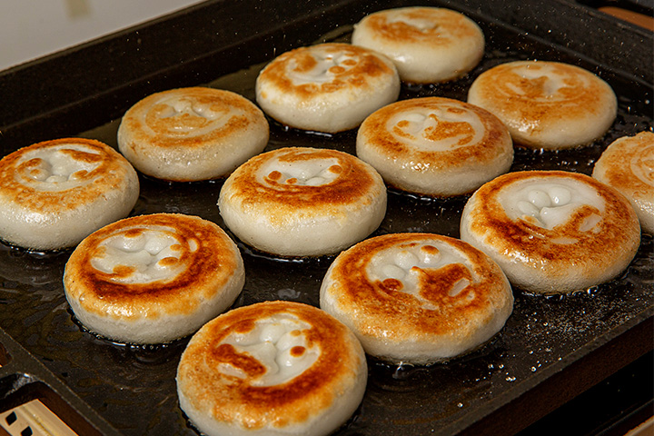

Hotteok

What is hotteok?
Hotteok (호떡) is a popular winter time street food in Korea. It is a pancake that
is filled with a sweet-flavored mixture containing brown sugar, cinnamon, honey, and chopped peanuts.
Cooking hotteok and enjoying it with a cup of warm chamomile tea was one of my favorite
winter time activities while living in Korea.
Ingrediants
- yeast
- breadflower
- lukewarm water
- vegetable oil
- white sugar
- salt
Sweet filling for the hotteok
- brown sugar
- cinnamon
- turbinado sugar
- chopped peanuts
Directions
- Mix all of the main ingrediants together in a large bowl.
- Oil your hands to prevent sticking, and take a piece of dough.
- Flatten the dough in the palm of your hand until half a cm thick, then place
a small portion of the sweet filling in the center of the dough.
- Place dough in oil on pan that's medium-hiigh heat. Allow to cook for 30 seconds.
- Flip the dough over, and smash down with spatula. Cook until both sides are a golden color.
Korean Recipes